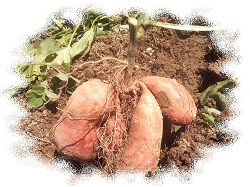
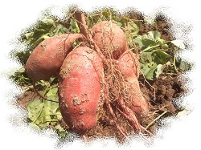

地瓜在植物學上的分類是：旋花科甘藷屬
地瓜的學名「甘藷」，又名「番薯」，也有人稱之「紅薯」。「番薯」的「番」字有外來的意思，發源地為墨西哥、哥倫比亞及附近的熱帶、亞熱帶地區。四季皆可種植、吃起來有飽足感、葉子也可以食用，所以成為當地的重要糧食作物及工業原料。在哥倫布大航海時代開始傳到世界各地，先由西班牙人傳入當時的殖民地（菲律賓）馬尼拉，再由葡萄牙人傳入馬來群島。1594年時，由商人陳振龍從菲律賓呂宋島攜苗回福建傳入中國，再由中國經琉球傳入日本、薩摩、歐洲及非洲...等地。台灣則是在十七世紀初葉時，明末荷蘭佔領台灣時期，由福建（中國）傳入。
在台種植歷史從荷蘭時期地瓜來台已有400多年的歷史了。根據台灣農業報統計，民國35年至62年間，因為農村以地瓜為養豬飼料，此時地瓜的生產量為最高。民國62年以後，因為家畜飼養食糧的改善，漸漸以玉米代替地瓜成為養豬飼料，以至於生產量逐年減少，至民國79年為最低。
台灣最早時期，地瓜被視為是養豬飼料，當時並未做為人類糧食。但在西元1945年台灣光復後（民國38年），物資缺乏，當時地瓜比稻米便宜許多，食用後容易有飽足感，且地瓜刨成地瓜絲，晒乾後可以貯存很久，因此地瓜就被當作代用食物，成為家家戶戶的主要糧食。地瓜具有「容易栽培、收穫量穩定，可以用來餵養牲畜，又可以解決人類飢餓時的糧食需求」的特質，當時對農民而言是一種非常重要的農作物。但在社會經濟繁榮後，台灣人的主要糧食便逐漸被稻米所取代。
民國85年時，營養專家提出「地瓜可以中和體內過多的酸性物質、潤腸通便」的優點，加上體驗經濟的盛行，帶動休閒產業「烤地瓜」活動，所以地瓜開始受到消費者的喜愛，使地瓜的種植面積漸漸增加。
近幾年，便秘的人口不斷增加，「大腸癌」的案例增加已取代了「肝癌」名列十大死因之首，而「大腸癌」成因之一為排便不正常。就在此時，研究發現地瓜幼芽及嫩葉含有豐富的維生素C、E、B胡蘿蔔素等營養素，可預防癌症，且地瓜豐富的纖維素，更是有助於排便、代謝、清除微細血管中的廢物，營養專家也指出「地瓜可以中和體內過多的酸性物質、潤腸通便」的優點，加上體驗經濟的盛行，帶動休閒產業「烤地瓜」（焢窯）活動，地瓜開始受到消費者的喜愛，促使「食用地瓜」在台灣成為一股新的流行風潮，台灣地瓜的種植面積因此逐漸增加。
台灣的地瓜目前以食用、食品加工和地瓜葉菜為主要的用途。食用過多的地瓜容易出現脹氣及排氣等副作用，且由於地瓜屬於五穀根莖類，熱量不低，糖份也高，比較不適合糖尿病患者過量食用，因此地瓜食用量還是要留意。
參考文獻：地瓜對人體的影響、地瓜的歷史、瓜瓜園－地瓜—台灣人有著濃得化不開的感情